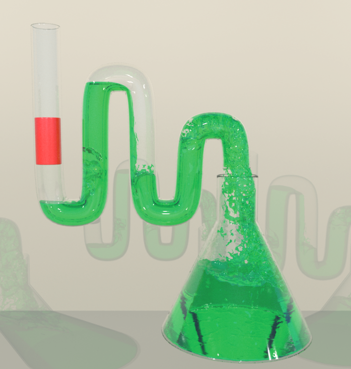

|

|
|
Abstract:
We propose to enhance the capability of standard free-surface flow simulators with efficient support for immersed bubbles through two new models: constraint-based bubbles and affine fluid regions. Unlike its predecessors, our constraint-based model entirely dispenses with the need for advection or projection inside zero-density bubbles, with extremely modest additional computational overhead that is proportional to the surface area of all bubbles. This surface-only approach is easy to implement, realistically captures many familiar bubble behaviors, and even allows two or more distinct liquid bodies to correctly interact across completely unsimulated air. We augment this model with a per-bubble volume-tracking and correction framework to minimize the cumulative effects of gradual volume drift. To support bubbles with non-zero densities, we propose a novel reduced model for an irregular fluid region with a single pointwise incompressible affine vector field. This model requires only 11 interior velocity degrees of freedom per affine fluid region in 3D, and correctly reproduces buoyant, stationary, and sinking behaviors of a secondary fluid phase with non-zero density immersed in water. Since the pressure projection step in both the above schemes is a slightly modified Poisson-style system, we propose novel Multigrid-based preconditioners for Conjugate Gradients for fast numerical solutions of our new discretizations. Furthermore, we observe that by enforcing an incompressible affine vector field over a coalesced set of grid cells, our reduced model is effectively an irregular coarse super-cell. This offers a convenient and flexible adaptive coarsening strategy that integrates readily with the standard staggered grid approach for fluid simulation, yet supports coarsened regions that are arbitrary voxelized shapes, and provides an analytically divergence-free interior. We demonstrate its effectiveness with a new adaptive liquid simulator whose interior regions are coarsened into a mix of tiles with regular and irregular shapes.
|

![[PHOTO]](../../images/knight_small.png)